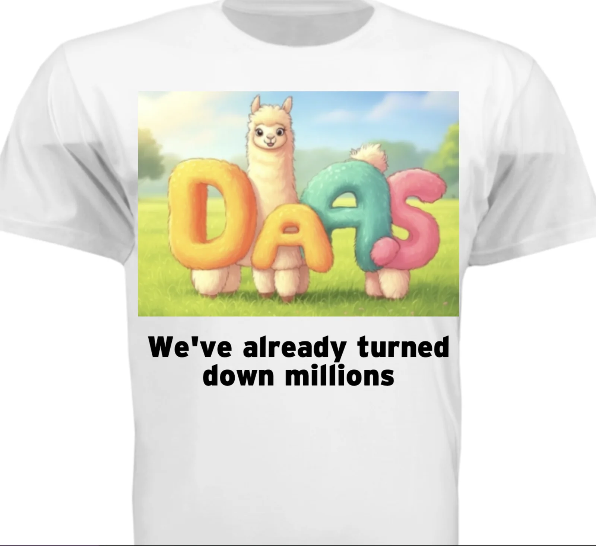

Welcome friends to another addition of the newsletter. Unfortunately last week wasn’t nearly as eventful as this week but nonetheless the week must be chronicled so here we are.
Monday
Unfortunately I was sick much of today. Not terribly sick mind you but enough that I skipped work. I spend the day reading various things of varying educational value. Some of the things were more educational like ML articles, and less educational things included a substack of a girl whose Hinge profile I saw. The substack itself was ok, I learned that the mountains in Armenia are actually pretty cool and a bit more about that whole brat Charlie EXE thing which I found to be akin to informational potato chips (no substance but I kept on reading anyway). Also apparently there are tiktokers priding themselves on being trophy wives who live a life akin to being a trust fund baby. Ok then.
Tuesday
I’m still sick in bed but this time I largely abandoned the whole educational thing and just watched TV. Not much to report today other than I missed improv. Sad times in the empire.
Wednesday
I’m back to work!! The work day itself was pretty uneventful except for two things. The first was our company security training was due today. As you can expect everyone puts this off because it sucks. There was a company announcement about it at all hands today. When all hands was happening I decided to make a game representing IT chasing down folks to complete it. I put up the game here in case anyone wants to play (warning not mobile friendly, I had to quickly make this in half an hour during all hands so I could share in front of the company). I also shared it on the company slack. This happened to coincide with a company meme contest we were doing. I was really hoping the game would win on originality but sadly it did not.
In addition to this we also had a white elephant. To be honest I only participated because I had a gift I wanted to give. I made a t-shirt representing a company specific project.

Unfortunately I can’t explain all the references here but the point is there are a lot of inside jokes in this shirt and I thought people would like it. Sadly the gift didn’t come til Tuesday so I didn’t have much time to wrap it beyond the Rush order Tees packaging it came in. My gift was sadly opened last but when it was opened people really liked it ! Multiple people said my gift was the best and if it was opened earlier people would have been fighting over it!
After work I go to run club. Unfortunately I’m still recovering from the illness so I decide to instead turn it into Midnight walkers club. I come to the club in my backpack and jeans since I’m not running to some peoples surprise. Some of the people I met there were impressed I came and committed to walk and one of the guys said I would end up beating him anyway. 3 miles later and I do end up beating that group of people which was pretty funny! Today was the day I needed after two days under the weather.
Thursday
Our days starts of special today at 2AM when I wake up severely thirsty. Unfortunately I don’t have any filtered water so I instead make the mistake of drinking a sugary drink that keeps me up. I tried to go back to sleep for the first hour but afterwords I realize this is impossible and commit to staying up. There were a couple of times when it looked like I was going to nod off but thankfully I fought through it and work went as well as it could! I go home and take a quick nap and then I actually manage to go to bed at a reasonable time.
Friday
Work is pretty uneventful today. After work I play some online games with friends.
Saturday
Our day starts off with trash pickup which is always a hoot and a holler. Sadly due to the holidays and rain we only had 9 people but it was still good! Afterwards I go get brunch at Plow.
To preface this I have a friend whose obsessed with this restaurant called Plow and is a regular there. I think the food is ok but pretty overpriced. One thing I often do when going to restaurants with friends is not order because I’m a somewhat picky eater and mainly like to go for the vibes and to hang out with my friends. This friend gets annoyed when I don’t order (because she quite cares about the fact that all the staff know her and doesn’t want it to reflect on her) but in a very funny way that I love to use to troll her. It worked to absolute perfection today; when I said I wasn’t gonna order anything she shot me absolute daggers and it was hilarious! I couldn’t stop grinning! If you think I’m the asshole in this situation you’re probably not wrong, the goal of this newsletter is to convey an honest depiction of my week not the times when I’m the most morally upstanding Humza in all the land. I should also explain that I encouraged the group to come to Plow specifically so I could do this whole bit of not ordering anything in front of her.
She does get a slight form of revenge on me when I keep asking if she wants to see a magic trick and she shoots me down. Ah well you win some you loose some and I came out way ahead in this exchange!
Afterwards one of our friends invites us over for Hotpot and I eat way too much meat
Sunday
The morning starts off as always with the trash. Long time readers of this newsletter (aka you read the one last week) will know that last week I caught up with multiple friends from college and the trend continues this week. I hung out with one friend for a while and we walked quite a bit, I then hang out with another and get dinner. Then I came back home and wrote this newsletter!